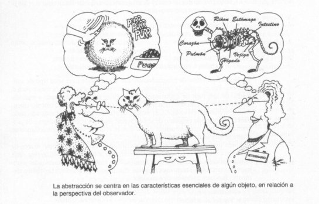
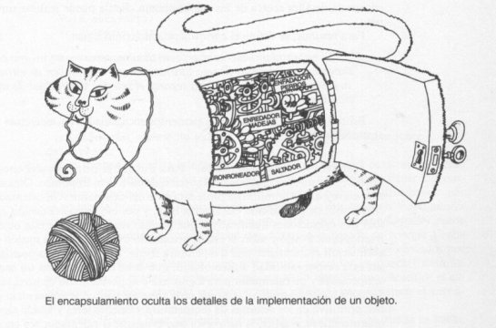

Abstracción
La abstracción es un proceso de interpretación y diseño que implica reconocer y enfocarse en las características importantes de una situación u objeto, y filtrar o ignorar todas las particularidades no esenciales.
- Dejar a un lado los detalles de un objeto y definir las características específicas de éste, aquellas que lo distingan de los demás tipos de objetos.
- Hay que centrarse en lo que es y lo que hace un objeto, antes de decidir cómo debería ser implementado.
- Se hace énfasis en el qué hace más que en el cómo lo hace.

Encapsulamiento
- Es la propiedad que permite asegurar que la información de un objeto está oculta del mundo exterior.
- El encapsulamiento consiste en agrupar en una Clase las características(atributos) con un acceso privado y los comportamientos (métodos) con un acceso público.
- Acceder o modificar los miembros de una clase a través de sus métodos.
